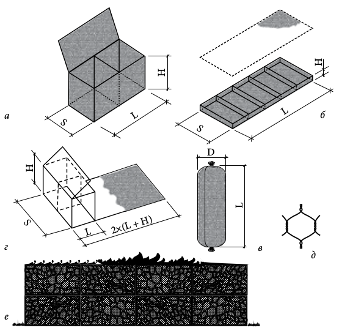

Габіони. Що це таке і що з ним робити
Габіони (фр. Gabion, італ. Gabbione - велика клітка) з'явилися в 1880-х роках, коли у Франції була запатентована конструкція для зміцнення річкових берегів. Вона представляла собою короб з дротяної сітки з одинарним крутінням, заповнений камінням. Використовувалися габіони не так вже й часто, але через століття отримали нове життя: подібні технології стали застосовувати в будівництві. Сучасні габіони, виконані з оцинкованої сітки з двой- вим крутінням, діляться на 3 основних типи: коробчаті, матрацні і циліндричні.  мал. Габіони: а - коробчатий; б - матрацний; в - циліндричний; г - розкрій сітки для коробчатого габіона; д - осередок габіона; е - паркан з габіонів.Перші застосовуються в основному як підпірні стінки, будівельні блоки та декоративні елементи, другі - в якості укріплень дна і берегів річок, струмків і ставків, а треті - як будівельні конструкції. Габіони володіють достатньою гнучкістю, дозволяючи в точності повторювати рельєф місцевості і легко сприймати осадку грунту. Їм не потрібно навіть фундамент. Завдяки високій пористості дренаж теж не потрібен. Сітки заповнюють прямо на місці будь-яким доступним камінням, галькою, валунами, шлаком, клінкером. Стіна з габіонів - ідеальне рішення, якщо потрібно позбутися від великої кількості накопиченого на ділянці будівельного сміття, наприклад кам'яної крихти або старого бетону. Головне, щоб розмір частинок заповнювача був більше розміру осередку сітки (70-150 мм). засипати всередину матеріал прихований від очей, а при бажанні сітку можна обшити дерев'яними панелями або, насипавши зверху землі, висадити кучеряві і повзучі рослини, які будуть пробиватися крізь кам'яний наповнювач стіни і маскувати сітчасту поверхню. Окремі габіони скріплюють між собою дротом, утворюючи єдину конструкцію, яка з часом «вростає» в ландшафт, стаючи його невід'ємною частиною. Цьому сприяє поступове заповнення габіонів грунтом і проростання в ньому рослин. При цьому зміцнення таких споруд відбувається набагато раніше, ніж закінчуєтся термін служби сітки. Габіони продовжують існувати за рахунок утвореного в них шару грунту і пророслих рослин. Використовуючи габіони, можна не тільки зміцнити рельєф свого ділянки і облагородити його зовнішній вигляд, а й звести окремі споруди. В останні роки з'явився новий вид габіонів - пергон, що представляє собою вузький сталевий короб, зварений з оцинкованого прутка. Це обладнання було розроблене суто для зведення огорож, арок, клумб і декорування різних конструкцій. Огорожа з габіонів - найбільш витребувана конструкція. Висота однієї секції такого паркану - 200-250 см. Незамінні габіони і в ролі підпірної стінки, якщо межа ділянки проходить уздовж яру або крутого берега річки. Дротові контейнери, заповнені великими каменями, хоча і досить масивні, але відмінно вписуються в сад, оформлений в сучасному стилі. І головне - швидко монтовані габіони в подальшому зовсім не вимагають догляду, хіба що ви захочете підстригти рослини, що уподобали дику огорожу.